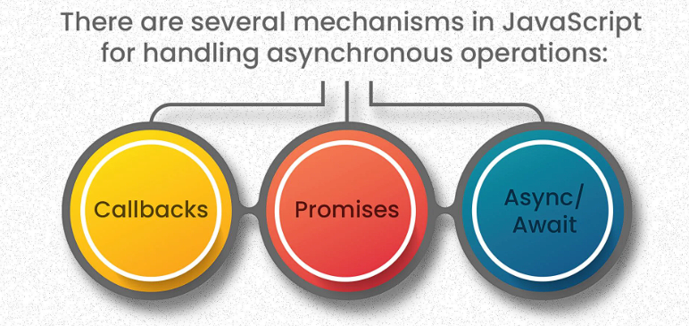

Welcome to Asynchronous JavaScript Techniques
Asynchronous JavaScript refers to a programming paradigm in which tasks can be executed concurrently without blocking the main execution thread. In other words, asynchronous javascript allows operations to be initiated and completed independently of the main program flow, enabling non-blocking behaviour and improved performance in web applications.
This page provides a brief introduction to various asynchronous programming techniques in JavaScript, including Callbacks, Promises, and Async/Await. These techniques help manage tasks that require waiting for an operation to complete, such as fetching data from an API or delaying execution.
Callback Functions
Callbacks are functions passed as arguments to other functions and are executed once a task is completed. They are commonly used to handle asynchronous tasks but can lead to complex code when multiple callbacks are nested, often referred to as "callback hell".
Example: Setting a delay or executing code after an asynchronous event, like fetching data.
Promises
Promises provide a more structured way to handle asynchronous operations. A Promise represents a value that may be available now, in the future, or never. Promises can either be resolved or rejected, which allows chaining multiple asynchronous operations and handling errors more gracefully.
Example: Using a Promise to fetch data from an API, showing "loading" until the data is available, and then displaying the result.
Async/Await
Async/Await syntax allows writing asynchronous code in a synchronous-looking manner. It is built on top of Promises and offers a cleaner and more readable way to handle async operations, especially when working with multiple Promises.
Example: Using `async` functions and `await` to pause code execution until an asynchronous task completes, making the code more intuitive.
Click on each tab to explore how these concepts are implemented with practical examples.